Matched builder comparison
Drag the divider. The geometry, palette, lighting and scene composition remain recognizable; the normal render keeps full backing resolution and 4× multisampling on the tested renderer.

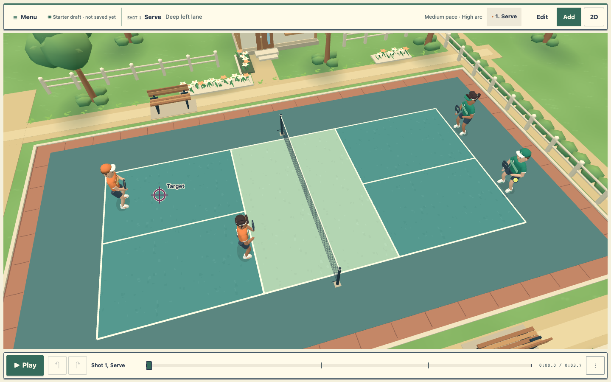
Reviewed · 4175Optimized · 4176Scene and phone readability
Portrait authoring · reviewed Portrait authoring · optimized
Portrait authoring · optimized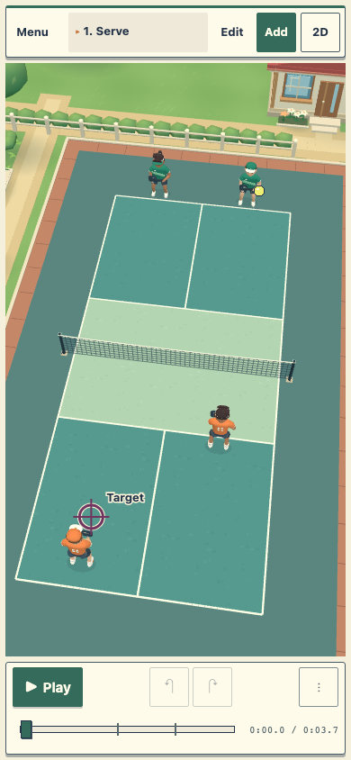
Landscape authoring · optimized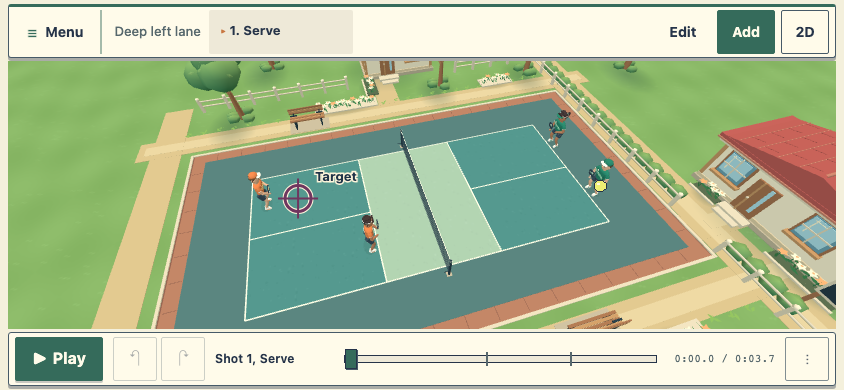
All court cameras stay clear
The reverse view revealed a clubhouse wall blocking play in the reviewed scene. Moving the clubhouse and its path keeps the town character while clearing that view.
Behind green · reviewed obstruction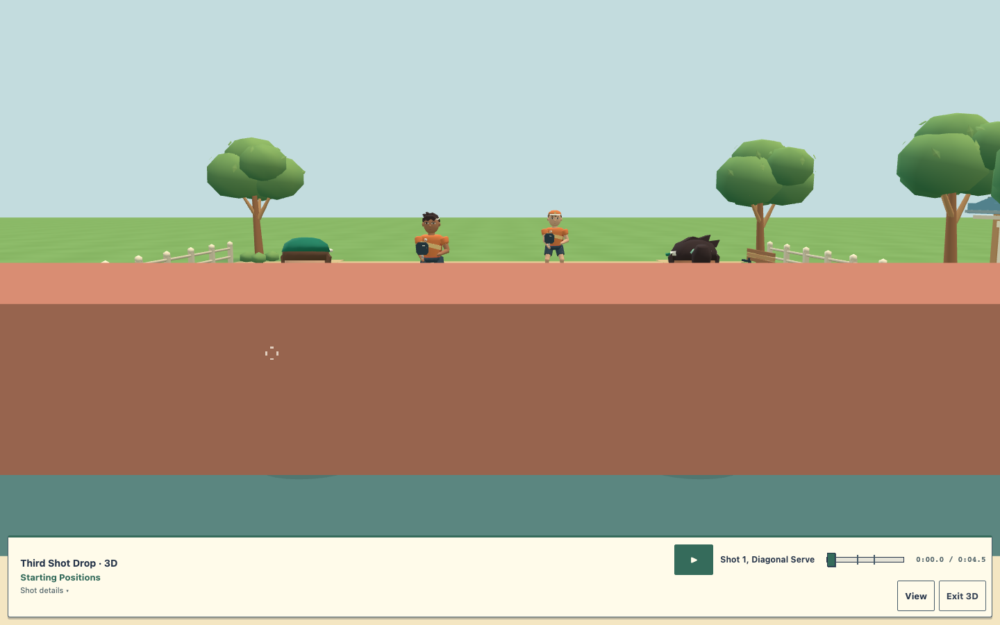
Behind green · cleared composition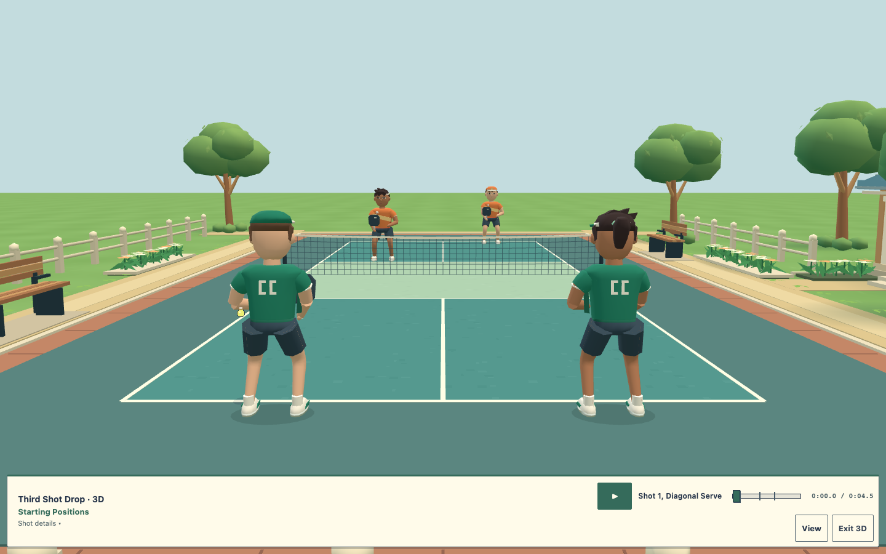
Behind orange · clear court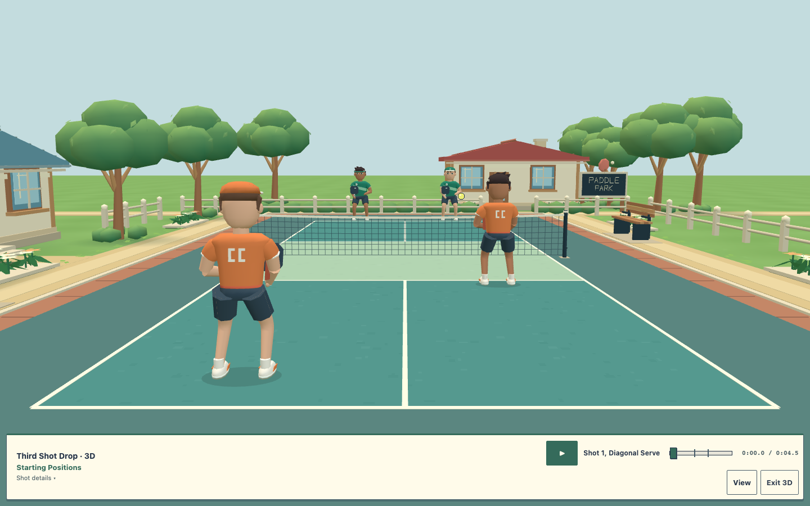
Phone portrait · clear live court Native DPR3 phone views
The final phone captures retain the app’s actual DPR3 backing resolution. Portrait and landscape show the same full court, live players, net and ball.
Continuous knees and fitted sleeves
Before · overlapping knee caps and sleeve joins After · continuous leg surface and fitted sleeve
After · continuous leg surface and fitted sleeve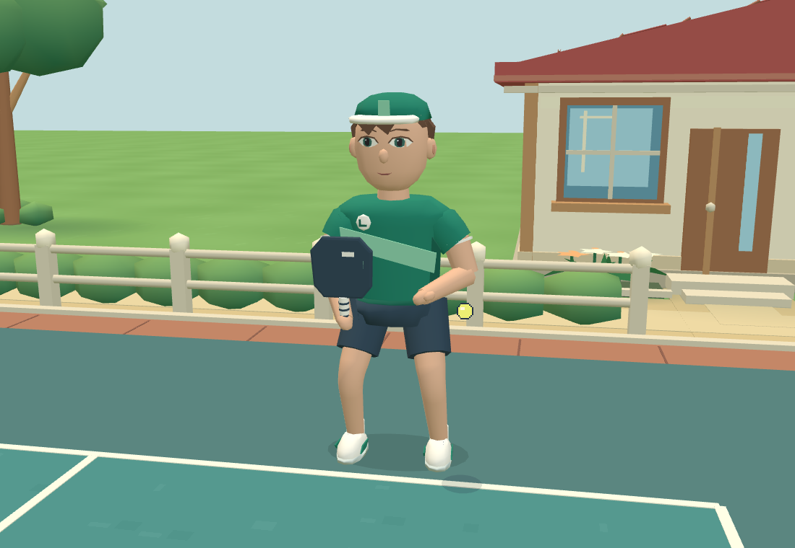
Green · capGreen · visor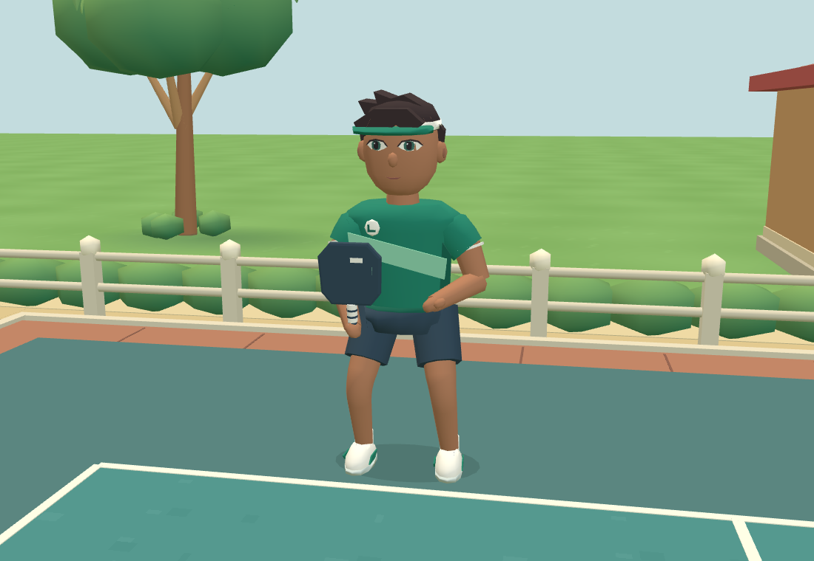
Orange · cap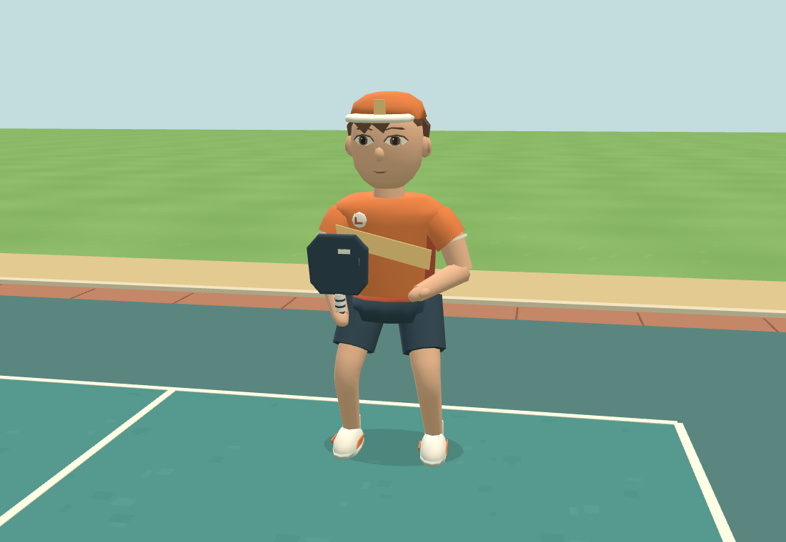
Orange · headband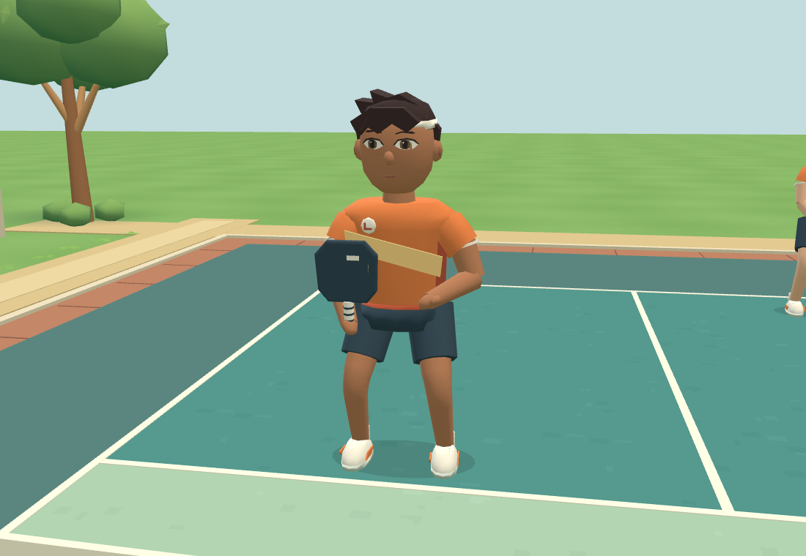
Motion comparison
Four representative plays, including serve/return, drop and drive. The original animation anchors and shared clock remain authoritative.
Reviewed village motion · 4175Optimized village motion · 4176
Final matched performance
All 18 counterbalanced trials completed on the exact frozen builds. The optimized village retains full resolution and native 4× antialiasing while reducing repeated scene rendering.
| Surface · version | Callback median / p95 · ms | Mean render-call interval · ms |
|---|
| Desktop · baseline | 24.9 / 25.1 | 21.71 |
| Desktop · reviewed | 25.0 / 33.4 | 26.64 |
| Desktop · optimized | 16.6 / 16.9 | 14.09 |
| Phone DPR3 · baseline | 50.0 / 58.4 | 50.93 |
| Phone DPR3 · reviewed | 58.3 / 58.4 | 55.00 |
| Phone DPR3 · optimized | 25.0 / 33.4 | 26.75 |
Medians of three per-run statistics. Isolated Chromium uses SwiftShader; these are callback and render-call intervals, not displayed FPS or physical-phone performance. Native phone backing resolution is 1170 × 2532. Its cache retains 22.60 MiB between frames and temporarily peaks at an estimated 135.61 MiB during rebuild, excluding the existing framebuffer and driver overhead. Initial scene setup is approximately 70–94 ms longer than the reviewed village. Full performance findings and raw evidence.
235 unit tests, 29 renderer tests, 28 offline package scenarios, 72 direct/cached pixel comparisons and 30 lifecycle cycles passed. Independent Astra review accepts the closer village direction with remaining limitations in environmental lighting, distant scenery and facial expression.
Why the cache was chosen
Controlled comparisons identified full-frame multisample raster work as the main cost. Turning off antialiasing was faster but visibly roughened edges; replacement filtering softened fine details. Reusing the stationary town preserves those details while avoiding the same work on every animation frame.
Full render · original 4× multisampling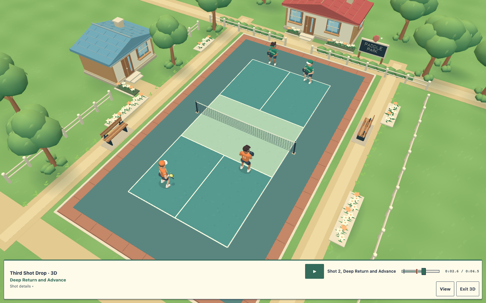
Selected approach · cached static worldRejected option · softer edge filtering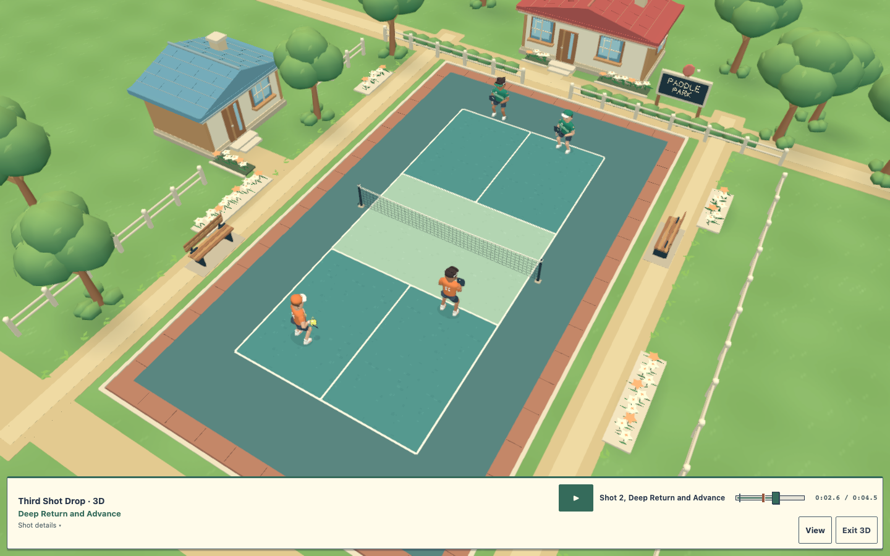
Diagnostic images above are not final performance acceptance. The report records the final counterbalanced runs, functional checks, resource budget and remaining caveats. Phone images are emulations; no physical-device performance claim is made.